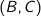
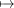
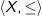
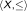
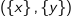
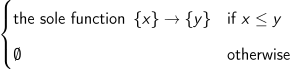
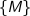
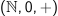
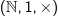

The objective of this course is to develop a comprehensive toolkit to study a very broad class of mathematical objects, such as abelian groups, modules over commutative rings, vector spaces, and more. Broadly speaking, these objects are all categories, and the toolkit we will develop will apply to a specific kind of categories known as abelian categories.
Before we develop the homological algebra toolkit, we will need to develop a basic understanding of category theory. This will be the primary focus of this chapter. In so doing, we will be able to understand the theory of abelian categories and understand the broader context in which the theory of homological algebra is applicable.
The basic idea of category theory is to reason collectively with large classes of mathematical objects. It is often useful to talk about a ‘set of all sets’ or a ‘set of all groups’. Unfortunately, if we reason about these naïvely, we run the risk of running into paradoxes, such as Russell’s paradox. Category theory provides a way to reason about these large classes of objects without running into these paradoxes.
In this module, we will not be too precise about what constitutes a class; this is actually a very important choice in category theory, and the fact that we will not be precise about this makes our treatment of the subject fundamentally imprecise. Nevertheless, our treatment will be rigorous enough for the purposes of studying homological algebra.
With this disclaimer in mind, we are ready to begin.
Definition 1.1.1 (Category). A category consists of the following data.
| ffi : HomC Θ HomC | ! HomC : (f;g)g ffi f |
such that
There are numerous examples of categories, some familiar and some unfamiliar.
There is a slightly less familiar example that is of a computer scientific flavour.
Example 1.1.3 (Pre-Orders). Let X be any set. Let ˇ be a pre-order on X, ie, a binary relation that is reflexive, antisymmetric and transitive. We can define a category  such that
| Hom   = < the sole function fxg ! fy g if x ˇ y >: ; otherwise" class="left" align="middle" /> |
Finally, a more abstract example.
Example 1.1.4 (Monoids). Let M be a monoid with with operation Θ and identity e. We can view M as a category C with the following data.
A specific thing that we can take ? to be is the monoid M itself (ie, = ). Then, the morphisms in C correspond to the monoid homomorphisms M ! M by (left-)multiplication by elements of M. In other words, we describe C by the standard action of M on itself.
In the above examples, the category Set stands out as being the ‘largest’: in the other two examples, the class of objects was actually a set. This is not true in Set. That being said, in all our examples, the morphisms between any two objects formed a set. We make two definitions here to capture this idea.
In this module, we will not study any categories that are not locally small. We next define a category that is even more restrictive.
All the examples we have discussed so far are of locally small categories. Set, however, is not a small category, whereas pre-ordered sets and monoids are small categories.
Finally, we define a construction that flips arrows in a category.
Definition 1.1.7 (The Opposite Category). Given a category C, the opposite category Cop is defined as follows.
One can show that the above data does, indeed, form a category.
sorry
It turns out that we can define a meaningful notion of mapping categories to categories.
Definition 1.1.8 (Covariant Functor). Given categories C and D, a covariant functor F : C!D associates
A functor is essentially something that associates objects to objects and arrows to arrows. Covariance means that arrows are preserved. We also have a notion of functors that flip arrows.
To some degree, we can view functors as ‘structure-preserving maps’ between categories, ie, as ‘morphisms’ between categories.
Example 1.1.10 (The Category of Small Categories). We denote by Cat the category whose objects are small categories and whose morphisms are functors between small categories. The identity morphism on a small category C is the identity functor id C : C!C. The composition operation on morphisms is the composition operation on functors.
There are many examples of functors with which we are familiar.
Example 1.1.11 (Exponential Functors). Recall from Example 1.1.4 that monoids can be viewed as categories. Consider the monoids  and . We can define a functor F : ! by F(+) = Θ and F(n) = 2n. This is a functor because it preserves the monoid structure.
sorry
sorry
Often, categories will be related but not quite equivalent. The idea is to define a weak notion of equivalence using the concept of adjunction. This is a very important concept in category theory, relevant not only to mathematicians but also to computer scientists.
The way that adjunctions are expressed are in terms of functors going both ways between two categories. These functions will express an adjunction if they are an adjoint pair, ie, if there is a specific relationship between them.
Here, we provide solutions to the weekly problem sheets.
Solution. This is how you write a solution.
For the latest version of these notes, visit https://thefundamentaltheor3m.github.io/HomAlgNotes/LastLocallyCompiled.pdf. For any suggestions or corrections, please feel free to fork my repository and make a pull request.